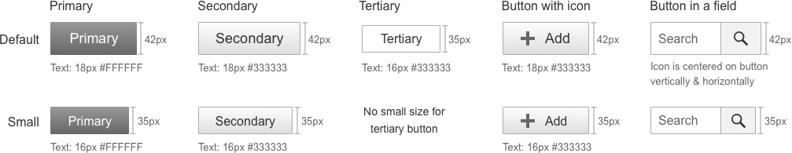
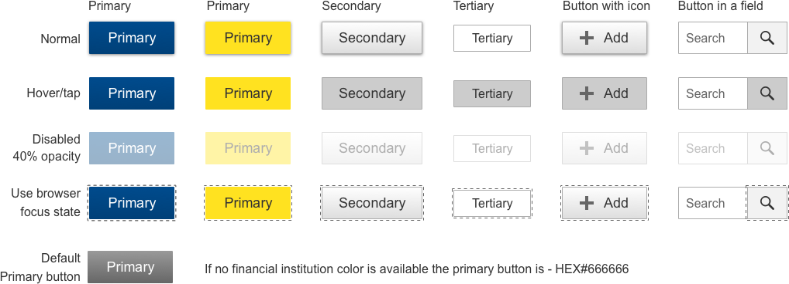
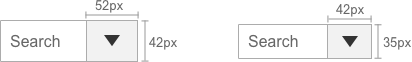
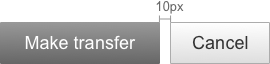
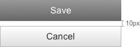
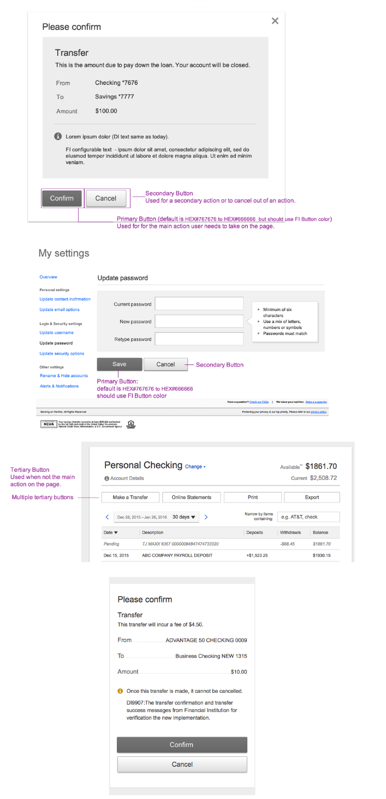

Buttons
Sizes
There are two button sizes. The default button size is 42px. The small button has a height of 35px and is used when creating a complex form with space constraints.

States Fill & Stroke Specifications

Button Interaction Details
Primary vs. Secondary Buttons
Primary: Use for the primary action that the user must take on the page.
Primary and secondary: Use both when there is a choice between two actions and one action can be recommend over the other, and/or the secondary button is used to cancel the action.
If multiple actions have equal value, then use all primary buttons.
Tertiary buttons : Used when they are not the main action on the page.
Large vs. Small Buttons
Use the large button sizes almost exclusively in designs. Exceptions are when there is not enough room on the page for the 42px height (Example: inside a table)
If there are multiple choices for non-primary actions on the page, then use the tertiary button for those actions. See examples below.
*Critical tasks should not depend on disabled buttons in order for the user to understand the action.
Other Types of Button
Input with dropdown

Toggle Buttons
The Toggle Button is divided into two segments and behaves as a single-selection control, allowing the user to click and immediately initiate an action.
The toggle state allows you to highlight the current state. Ex.: Yes/No, On/Off. It should use the FI primary accent color or the default color of #666666 in the on state.
Links as buttons
The link default color is #0055CC, and should use the financial institution’s link color
A link is used to either take action or initiate an action.
Links should be used when there are multiple actions to be taken on the page and using a push button would make the page visually heavy.
- For accessibility, links are underlined or have an icon near them to indicate that it is a tappable area.
- When the link is selected (hover, focus, or active), the underline disappears.
- Links should follow the branding color for links, which is the financial institution’s primary accent color (default color #0055CC).
- The minimum font size for links is .875 em and the maximum is 1.125 em.
- Icons can be placed at the right of the link, but they are not mandatory.
- Labeling rules apply to link buttons as well (shown later).
- For link buttons to be tablet-friendly, the padding around the link should be big enough for a user to select by touch.
- Height for the target area should be 42px.
Stand alone link
LinkThe padding around the stand-alone link (when not used as a part of another link or non-linked text) should be large enough for the user to select by touch without tapping something else accidentally; 20px minimum on each side of the tappable area.
Link with icon
Sample text
Example of a link with an icon using HEX color #333333
Sample text
Example of a link with an icon using the link color
Icons as buttons
- A standalone icon works best when the action can be represented by a symbol that is well understood. An alt value is required.
- If there is any doubt about an icon’s meaning, use a text next to it to clarify.
- An icon may have a hover state, but it is not mandatory.
- A common example of a icon used as a button is the close icon on overlays.
- Another example is the help icon.
Other Button Details

The space between buttons is always equal to 10px, regardless of the button type and size.
The width of the button is a minimum of 20px from the centered text to each edge.
At the XS breakpoint, the buttons are 100% width.
The width of the button is a minimum of 20 px from the centered text to each edge.

At the XS breakpoint the buttons are 100% width.
Processing
When a process takes several seconds, the submit button should be disabled until the process is complete and the user receives confirmation feedback.
Examples
How to use buttons on an overlay
They are left-aligned to the bottom left corner of the overlay.
Overlays also use the close icon button placed in the top right corner. This usually closes the overlay without any confirmation.
For accessibility:
When an overlay opens, the default focus is on the close button. Tab order moves from close, to the overlay content, to the primary button, and finally to the secondary button. The recommended practice is that source order determines the path, as opposed to changing the tab index of elements.
